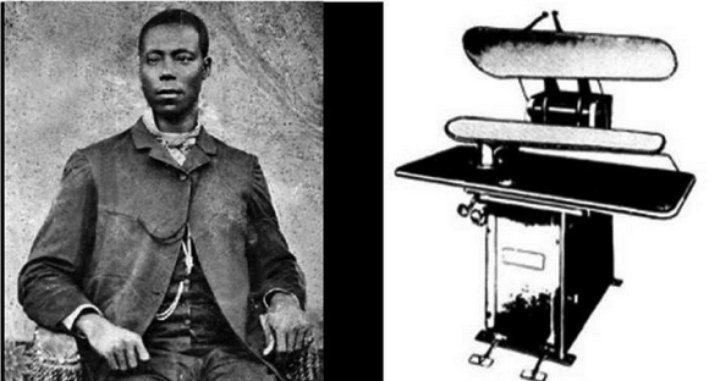

Unbought and Unbossed.
Shirley Chisholm didn’t allow double discrimination from rewriting history

Shirley Chisholm was born in Brooklyn, New York on November 30, 1924 to Charles and Ruby St. Hill. Her father was a factory worker who was originally from Guyana and her mother was a seamstress that was originally from Barbados. Shirley excelled in school as a young girl and attended the well-renowned Brooklyn Girls’ High School. She would go on to attend Brooklyn College and graduate cum laude in 1946. While in school, Shirley participated on the debate team and received numerous awards for her talents. Chisholm’s professors encouraged her to pursue a career in politics, but Shirley could not see her place in politics as a black female in the 40s.
Instead of initially jumping into politics, Shirley decided to enter education and become a teacher. She initially started working as a nursery school teacher. During this time, she met Conrad Q. Chisholm and they became married in 1949. Shirley continued her education at Columbia University and received her master’s degree in early childhood education in 1951. Ironically, her time as a teacher caused for her interest in politics to increase. Shirley would become a consultant to the New York City Division of Day Care in 1960. She would also join the League of Women Voters, the NAACP, the Urban League, and the Democratic Party club in Brooklyn. In 1965, Chisholm joined the New York State Assembly. She served until 1968, when she would decide to take her political aspiration to another level.
After years of teaching and becoming more and more involved in politics, Shirley Chisholm decided that she would run for a U.S. Congress seat. During this period certain districts were redrawn which forced the incumbent for Shirley’s district to run in a different district. The redrawing of districts left a vacancy for the 12th district that Shirley would fulfill when she decided to run in 1968. Chisholm dominated the general election due to the lack of true competition and became the first black woman to sit in Congress and only the second woman in history to hold a Congressional seat. While holding her seat, she would face plenty forms of discrimination but did not allow it to her deter her. She was first assigned to the House Agricultural Committee although she was from urban Brooklyn. Shirley would go on to flip the situation and play a key role in the implementation of the Supplemental Nutrition Assistance Program (SNAP) and the Special Supplemental Nutrition Program for Women, Infants and Children (WIC). Both of these programs continue to help low-income families and mothers throughout the nation today. She would also help push a bill which demanded minimum wage for domestic workers. During her tenure, she would go on to introduce over 50 pieces of legislation that were geared toward reaching racial and gender equality, as well as help expand healthcare and education opportunities for people of any color or gender. In 1971, she co-founded the National Women’s Political Caucus.

In 1972, Chisholm announced her candidacy for the 1972 Democratic Party presidential nomination. She became the first African American to seek a major party’s nomination to become the President of the United States of America. During her campaign, Shirley was faced with an uphill battle due to the amount of discrimination she had to deal with. Unlike her adversaries, Shirley was unable to participate in televised primary debates with the exception of one due to her taking legal action. She dealt with death threats and racist individuals attempting to assassinate her. Shirley was even discriminated by her fellow black male colleagues due to her being a woman. Chisholm did not allow any of this to deter her and did not concede until after the Democratic National Convention. Shirley entered 12 primaries and finished in fourth place while garnering around 10 percent of the vote. Shirley would return to her seat on Congress and in 1977 she became the first black woman to serve on the House Rules Committee and only the second woman ever to serve. Shirley remained in Congress until 1983.
Shirley Chisholm is widely recognized as the first African American to seek a major party’s nomination to become the President of the United States of America, but her legacy is in her work while holding a seat in Congress. She helped introduce legislation that continues to help African Americans and women today. Her ability to continue to fight through the adversity and discrimination served as inspiration for African Americans and women to follow suit in their personal lives and continues to have a permeating effect today. Shirley’s spirit lives on today through the numerous women and African American leaders of today as they continue to push for racial and gender equality in the United States of America.